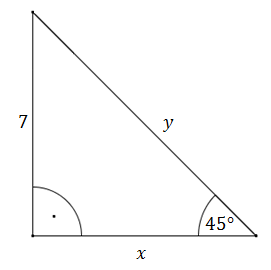

Oblicz długość odcinków \(x\text{ i }y\). 
Na początku zauważmy, że \(x=7\), bo trójkąt jest prostokątny. Wiemy, że odcinek
\(y\) jest "tak jakby" przekątną kwadratu o boku długości \(7\), zatem \(y=7\sqrt{2}\).
Teraz rozwiążemy ten przykład jeszcze raz, tylko przy wykorzystaniu funkcji
trygonometrycznych.
Odcinek \(x\) możemy policzyć z tangensa:
\[\begin{split}\operatorname{tg} 45^\circ
&=\frac{7}{x}\\[10pt]1&=\frac{7}{x}\\[10pt]x&=7\end{split}\] Odcinek \(y\) obliczymy z
sinusa: \[\begin{split}\sin
45^\circ&=\frac{7}{y}\\[10pt]\frac{\sqrt{2}}{2}&=\frac{7}{y}\\[10pt]\sqrt{2}y&=14\\[10pt]y&=\frac{14}{\sqrt{2}}\\[10pt]y&=\frac{14\sqrt{2}}{2}\\[10pt]y&=7\sqrt{2}\end{split}\]